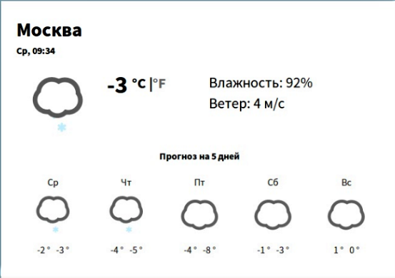
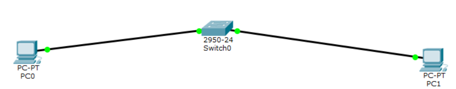

- Добро пожаловать
- 1 лабораторная работа
- 2 лабораторная работа
- 3 лабораторная работа
- Подготовка к экзамену
Интернет-технологии
В данном курсе три лабораторные работы:
1.Подготовка личной страницы для создания отчета
2.Разработка простого веб-приложения
3.Настройка локальной сети передачи данных

Подготовка личной страницы для создания отчета
Цель работы: Создание персональной страницы-отчета на github и работа с git.
Шаг 1. Форк репозитория
Шаг 2. Клонирование репозитория
Шаг 3. Создание базовой иерархии и личной страницы
Шаг 4. Сохранение изменений в репозитории
Шаг 5. Pull request
Шаг 6. Проверка выполнения

Разработка простого веб-приложения прогноза погоды
Цель: Проектирование и разработка веб-приложения. Приложение написано с помощью фреймворка React.JS. Город определеяется с помощью Yandex.Maps API, прогноз запрашивается с Yahoo! Weather API. Node.js и Express в роли сервера и node-sass-middleware препроцессор SASS.
Ссылка на приложение: репозиторий
Состав команды: Дирша Алеся Николаевна и Резенова Юлия Романовна
Настройка локальной сети передачи данных
Цель: настройка коммутаторов и маршрутизаторов.
1.Откроем программу, рассчитаем IP-адреса согласно выбранному варианту
2.Разместим два компьютера и коммутатор,настроим между ними адресацию. Убедимся, что все работает
3.Добавим еще коммутатор с двумя компьютерами и маршрутизаторы. Проведем необходимые настройки и проверим работоспособность
4.Настроим статическую маршрутизацию при помощи следующих команд:
Команды привилегированного режима // router#
show ip route – выводит таблицу маршрутизации;
show ip protocols – выводит расширенную информацию об используемых протоколах маршрутизации.
Команды режима глобального конфигурирования // router(config)#
ip route [сеть назначения] [маска] [маршрут] – добавляет в таблицу маршрутизации статический маршрут до указанной сети назначения. Маршрут может быть задан в виде исходящего интерфейса и/или (предпочтительно!) адреса next hop (IP-адреса входящего интерфейса следующего маршрутизатора на маршруте).
5.Установим банер на сетевое оборудование:
Banner motd [баннер] – определяет баннерное сообщение.
6.Все работает!
Подготовка к экзамену
Выберите все языки определения данных:
1.HTML
2.XML
3.OWL
4.SQL
5.CSS
6.JavaScript
7.T-SQL
8.HTML5
Данный вопрос составлен по лекциям и направлен на определение того, как отвечающийся разбирается в языках веб-программирования. Знает ли к какие языки относятся к Языкам отпределения данных, какие являются Языками программирования, а какие Языками разметки.
Ответ на данный вопрос подразумевает выбор нескольких вариантов из списка. Ответ не представляет особой сложности для тех, кто имеет хотя бы небольшое представление о каждом из перечисленных языков.
HTML (от англ. HyperText Markup Language — «язык гипертекстовой разметки») — стандартизированный язык разметки документов во Всемирной паутине. Относится к Языкам разметки и является неправильным вариантом ответа.
XML (англ. eXtensible Markup Language) — расширяемый язык разметки. Аналогично предыдущему ответу относится к Языкам разметки и является неверным вариантом.
OWL (англ. Web Ontology Language) — язык описания онтологий для семантической паутины. Язык OWL позволяет описывать классы и отношения между ними, присущие веб-документам и приложениям. Относится к Языкам определения данных. Верный вариант ответа.
SQL — язык программирования, применяемый для создания, модификации и управления данными в реляционной базе данных, управляемой соответствующей системой управления базами данных. Язык определения данных, выбор данного варианта является правильным ответом.
CSS — формальный язык описания внешнего вида документа, написанного с использованием языка разметки. Относится к языкам разметки, выбор данного варианта будет неверным.
JavaScript — мультипарадигменный язык программирования. Относится к Языкам программирования, неверный вариант.
T-SQL — процедурное расширение языка SQL. Можно отнести к Языкам определения данных, а значит данный вариант будет верным.
HTML5 (англ. HyperText Markup Language, version 5) — язык для структурирования и представления содержимого всемирной паутины. Аналогично HTML относится к языкам разметки и является неверным вариантом ответа.
Таким образом, к правильным вариантам относятся: OWL, SQL и T-SQL.